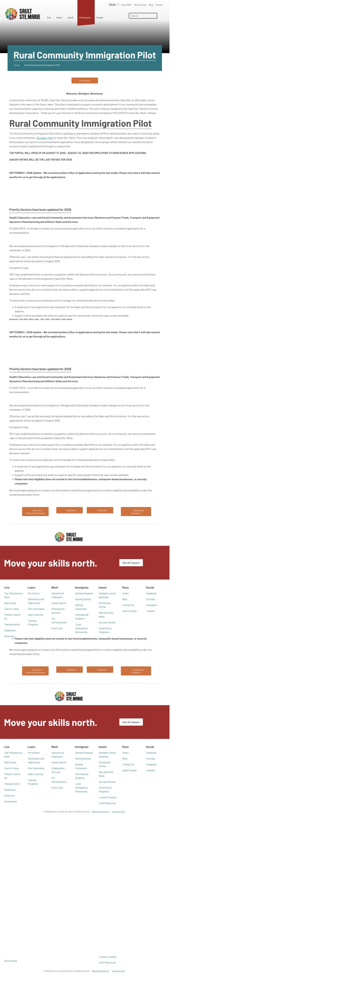

证据档案 / 核查基准 2026.09.17
来源 community5
Rural Community Immigration Pilot - Welcome to SSM
| 字段 | 记录 |
|---|---|
| 来源编号 | community5 |
| 核查日期 | 2026-09-17 |
| 取证方式 | browser DOM |
| 页面或文件SHA-256 | 5b167bbff685d2f1b05a46798d32ddb672e008962bc5b4c7e65f1eaebe7f7ef8 |
官方截图
截图时间：2026-09-17T05:24:10.360Z。截图只是当时页面证据，最新规则仍查看原页。
